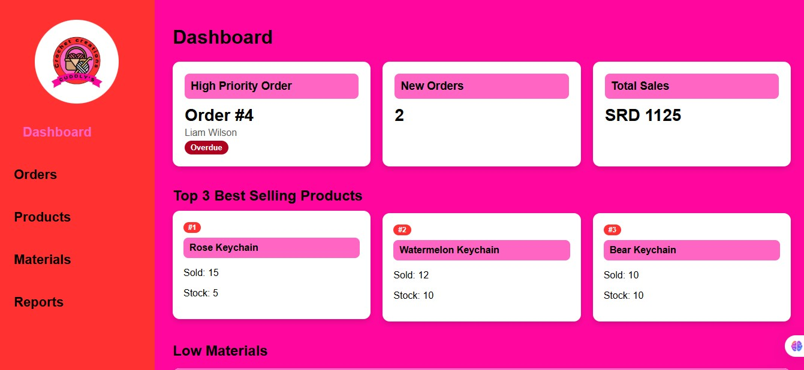

Cuddly's Crochet Creations — Internal Dashboard
A current school project: an internal dashboard for running Cuddly's Crochet Creations day to day — order priority and status, sales totals, best-selling products, and low-material alerts, plus sections for products, materials, and reports. Long-term plan is to grow it into a full public-facing website.
Current school project